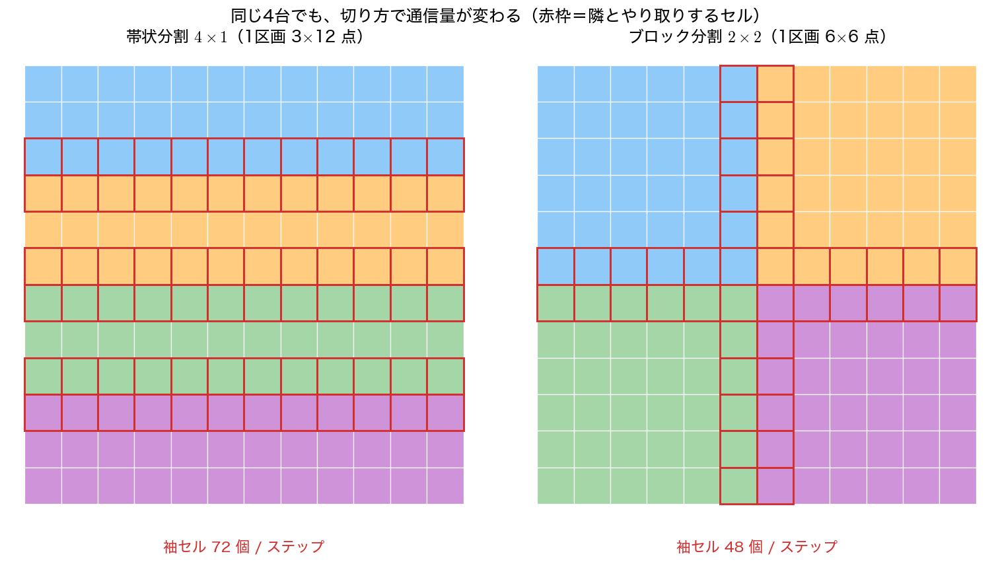

分散メモリと領域分割
1台では足りなくなったとき
前ページの結論は厳しいものだった。1台の中でコアを増やしても、共有しているメモリの帯域が増えないので、差分法のスイープは数倍で頭打ちになる。
ならば、計算機そのものを増やすしかない。台数を \(P\) 倍にすれば、コアだけでなく
- メモリ容量も \(P\) 倍
- メモリ帯域も \(P\) 倍
- キャッシュも \(P\) 倍
になる。前ページで弱スケーリングが落ちたのは帯域が増えなかったからなので、台数を増やす並列化なら弱スケーリングが成立しうる。実際、スーパーコンピュータでの大規模計算はすべてこの形をとる。
代償は、メモリが分かれることである。台 A の配列を台 B から読むことはできない。必要な値は明示的に送受信しなければならない。この送受信の標準規格が MPI（Message Passing Interface）である。
そして、この「明示的な送受信」は差分法と非常に相性がよい。第9回で確認したとおり、陽解法の更新
に必要なのは隣の点だけである。担当区間の内部は自分の持っている値だけで更新でき、足りないのは区間の端の外側1点ずつにすぎない。この「1点ずつ」を毎ステップもらえば、分割しない計算と完全に同じ結果が得られる。
領域分割と袖
格子を \(P\) 個の区間に分け、各区間に担当ぶん＋左右に1点ずつの余白を持たせる。この余白を袖（halo, ghost cell）という。
袖 担当する区間 袖
↓ ↓
+---+---+---+---+---+---+---+---+---+---+---+---+
| | | | | | | | | | | | | ← 台 p の配列
+---+---+---+---+---+---+---+---+---+---+---+---+
0 1 2 loc loc+1
↑ ↑
左隣の右端をコピー 右隣の左端をコピー
各ステップの手順は次の2段である。
- 袖交換: 自分の左端を左隣へ送り、自分の右端を右隣へ送る。同時に、左隣の右端と右隣の左端を受け取って袖に入れる
- 更新: 袖を含めた配列で \(u_1,\dots,u_{\mathrm{loc}}\) を更新する。ここには通信が一切ない
袖幅を決めるのはステンシルの点数ではなく半径——中心から何点先まで参照するか——である。1次元の3点ステンシル（拡散の FTCS、風上差分）は半径 1 なので袖は 1 点、1次元の5点ステンシル（4次中心差分）は半径 2 なので 2 点になる。
多次元でも同じである。第10回・第12回の2次元5点ステンシルは点数こそ 5 だが各方向の半径は 1 なので、袖はどの向きにも 1 点で足りる。「5点だから2点」ではないことに注意する。
この分割は近似ではない。実測では、\(P=1,2,4,8,16,64,256\) のどれでも分割しない計算との差が 0.000e+00 になる——丸め誤差すら出ない。足し算の順序すら変えていないからである。前ページのヤコビ反復と同様、「同じ計算を分担しているだけ」である。

袖交換を忘れるとどうなるか
袖交換を省いたらどうなるかを見ておく価値がある。
| \(P\) | 2 | 4 | 8 | 16 | 64 | 256 |
|---|---|---|---|---|---|---|
| 最大差 | \(1.732\times10^{-3}\) | \(1.732\times10^{-3}\) | \(1.732\times10^{-3}\) | \(1.732\times10^{-3}\) | \(1.802\times10^{-3}\) | \(1.858\times10^{-3}\) |
| 二乗平均平方根の差 | \(1.897\times10^{-4}\) | \(2.684\times10^{-4}\) | \(3.795\times10^{-4}\) | \(5.388\times10^{-4}\) | \(1.160\times10^{-3}\) | \(1.311\times10^{-3}\) |
区間の境目で袖が初期値のまま凍りつき、そこから誤差が広がる。1か所あたりの誤差の大きさは \(P\) によらないので最大差はほとんど変わらないが、境目の数が \(P\) に比例するので全体としての誤差は増える。
重要なのは、プログラムが止まらず、それらしい形の解を返すことである。前ページのデータ競合と同じ種類の誤りである。分散メモリの並列プログラムでは、
- 1台で走らせた結果と必ず突き合わせる（\(P=1\) は特別扱いせず、同じコードで通す）
- 台数を変えても答えが変わらないことを確かめる
という検証を、性能を測る前に済ませておく。
通信と計算の比
分割すれば速くなる、とは限らない。台数を増やすと1台あたりの計算は減るが、通信は減らない——むしろ相対的に増える。
1次元分割では、1台あたり
\(P\) に比例して増える。\(N=1024\) なら \(P=256\) で \(0.5\)——計算1に対して通信 0.5 である。ここまで来ると、いくら台数を足しても速くならない。
2次元で \(N\times N\) を \(\sqrt P\times\sqrt P\) に分けると、
\(\sqrt P\) にしか比例しない。実測でも \(P=256\) で \(0.0625\) と、1次元の \(1/8\) である。
| \(P\) | 1 | 2 | 4 | 8 | 16 | 64 | 256 |
|---|---|---|---|---|---|---|---|
| 1次元分割 通信/計算 | 0.0020 | 0.0039 | 0.0078 | 0.0156 | 0.0312 | 0.1250 | 0.5000 |
| 2次元分割 通信/計算 | 0.0039 | 0.0055 | 0.0078 | 0.0110 | 0.0156 | 0.0312 | 0.0625 |
台数が少ないうちは1次元分割のほうが有利（隣が2つしかないので通信の回数が半分）だが、\(P=4\) で逆転し、その先は差が開く一方である。
「表面積 / 体積」の原則
一般化すると次のようになる。\(d\) 次元の領域を \(P\) 個に分けるとき、
- 計算量は各区画の体積（担当する格子点数）に比例する
- 通信量は各区画の表面積（隣と接する面の格子点数）に比例する
したがって、表面積 / 体積を最小にする切り方が最良である。同じ体積なら、表面積は正方形・立方体に近いほど小さい。3次元でこの効果はさらに大きくなる。
| 切り方 | 1台あたりの通信量 | 通信/計算 | \(N=256\), \(P=4096\) |
|---|---|---|---|
| 1次元分割（板状） | \(2N^2\) | \(2P/N\) | 32.0 |
| 2次元分割（柱状） | \(4N^2/\sqrt P\) | \(4\sqrt P/N\) | 1.0 |
| 3次元分割（立方） | \(6N^2/P^{2/3}\) | \(6P^{1/3}/N\) | 0.375 |
\(P=4096\) では、板状分割の通信量は立方分割の 85 倍である。演習4でこの表を自分で作る。
実装の手間との釣り合い
次元を上げるほど通信は減るが、実装は面倒になる。3次元分割では隣が 6 方向あり、配列から面を切り出す処理（連続していないメモリを詰める）も必要になる。MPI にはこのための派生データ型（MPI_Type_vector など）やカルテシアン通信子（MPI_Cart_create、隣のランク番号を自動で計算してくれる）が用意されている。
実務では「まず1次元分割で動かし、台数を増やして通信が効いてきたら次元を上げる」という進め方が普通である。最初から最適な分割を実装しようとしない。
通信の回数を減らす: 時間ブロック化
通信のコストは「送る量」だけでは決まらない。1回の通信には立ち上がりの待ち時間（レイテンシ）があり、ノード間ではこれが数マイクロ秒に達する。\(4\) バイト送るのも \(4\) キロバイト送るのも、時間がほとんど変わらないことすらある。
そこで、袖を厚くして通信の回数を減らすという工夫がある。袖を \(w\) 点にすると、通信なしで \(w\) ステップ進める。ただし端の点は隣と重複して計算することになる（冗長計算）。
| 袖の厚さ \(w\) | 通信の回数 | 1区画の計算点数 | 冗長計算の割合 |
|---|---|---|---|
| 1 | 500 | 16 | 0.00 % |
| 2 | 250 | 34 | 6.25 % |
| 4 | 125 | 76 | 18.75 % |
| 8 | 63 | 184 | 43.75 % |
（\(P=64\)、1区画 16 点、500 ステップの場合）
通信の回数は \(\lceil n_t/w\rceil\) である。\(w=8\) では \(500/8=62.5\) ——\(62\) 回では \(496\) ステップまでしか進めないので、端数の \(4\) ステップのためにもう1回必要になる。整数除算の切り捨てで済ませると最後の数ステップぶんの袖交換が抜けるという、実装で実際によくある取りこぼしである。
送る総量は変わらない（1回あたり \(w\) 倍を \(1/w\) の回数）。減るのは回数だけである。一方で冗長計算は増えるので、1区画の担当点数が少ないほど割に合わなくなる。\(w=8\) で計算量が 1.44 倍というのは、通信を 8 分の 1 にする代償としては高い。
これは時間ブロック化（temporal blocking）と呼ばれ、第12回のループ順序で見た「キャッシュに載っている間に使い切る」という発想の、通信版である。同じ考え方が階層を変えて何度も現れる——レジスタとキャッシュ、キャッシュとメモリ、メモリとネットワーク。
MPI のコード例
考え方が分かったところで、実際の MPI がどう書けるかを見ておく。
MPI プログラムは全台が同じプログラムを実行する（SPMD, single program multiple data）。自分が何番目かを MPI_Comm_rank で聞き、それに応じて担当を決める。使う関数は驚くほど少なく、下の例では6種類しか出てこない。
| 関数 | 役割 |
|---|---|
MPI_Init / MPI_Finalize |
開始と終了 |
MPI_Comm_size |
全体の台数 \(P\) を得る |
MPI_Comm_rank |
自分の番号（\(0\) から \(P-1\)）を得る |
MPI_Sendrecv |
送信と受信を同時に行う（デッドロックしない） |
MPI_Reduce / MPI_Allreduce |
全台の値を集約する（和・最大など） |
MPI_Wtime |
実時間を測る |
以下は未実行の参考コードである
本講義の標準環境（Visual Studio / Docker）には MPI が含まれていないため、このコードは実行して確かめていない。動かすには MPI 実装（Open MPI, MPICH, Microsoft MPI など）を別途導入し、mpicc でコンパイルして mpirun で起動する必要がある。
本ページの数値はすべて、この下の「サンプルコード」——通信を配列のコピーで代用した1台版——の実測値である。ロジックは同じなので、MPI 版に移す際の雛形として読むこと。
#include <stdio.h>
#include <stdlib.h>
#include <math.h>
#include <mpi.h>
/* 参考: MPI による1次元拡散方程式の領域分割（第9回の FTCS）
u_t = u_xx, u(x,0) = sin(pi x), u(0,t) = u(1,t) = 0
全台が同じプログラムを実行し、自分の番号で担当を決める。
コンパイル: mpicc -O2 -Wall -std=c11 diffusion_mpi.c -o diffusion_mpi -lm
実行: mpirun -np 4 ./diffusion_mpi */
static const double PI = 3.14159265358979323846;
int main(int argc, char **argv)
{
MPI_Init(&argc, &argv);
int rank, size;
MPI_Comm_rank(MPI_COMM_WORLD, &rank); /* 自分の番号 */
MPI_Comm_size(MPI_COMM_WORLD, &size); /* 全体の台数 */
const int N = 1024, nt = 500;
const double r = 0.4; /* r <= 1/2（第9回の安定条件） */
int loc = N/size; /* N は size の倍数とする */
double h = 1.0/(N + 1);
/* u[1..loc] が担当ぶん、u[0] と u[loc+1] が袖 */
double *u = malloc((loc + 2)*sizeof(double));
double *w = malloc((loc + 2)*sizeof(double));
for (int i = 0; i <= loc + 1; i++) {
int g = rank*loc + i; /* 全体での通し番号 */
u[i] = sin(PI*g*h);
}
/* 端の台には隣がいない。MPI_PROC_NULL を相手にすると通信が空振りになり、
袖には初期値（＝境界条件）が残る。if 文で場合分けしなくてよい。 */
int left = (rank == 0) ? MPI_PROC_NULL : rank - 1;
int right = (rank == size - 1) ? MPI_PROC_NULL : rank + 1;
double t0 = MPI_Wtime();
for (int s = 0; s < nt; s++) {
/* --- 袖交換。送信と受信を同時に頼むのでデッドロックしない --- */
MPI_Sendrecv(&u[loc], 1, MPI_DOUBLE, right, 0, /* 右へ自分の右端 */
&u[0], 1, MPI_DOUBLE, left, 0, /* 左から左袖 */
MPI_COMM_WORLD, MPI_STATUS_IGNORE);
MPI_Sendrecv(&u[1], 1, MPI_DOUBLE, left, 1, /* 左へ自分の左端 */
&u[loc+1], 1, MPI_DOUBLE, right, 1, /* 右から右袖 */
MPI_COMM_WORLD, MPI_STATUS_IGNORE);
/* --- 更新。ここには通信が一切ない --- */
for (int i = 1; i <= loc; i++)
w[i] = u[i] + r*(u[i-1] - 2.0*u[i] + u[i+1]);
for (int i = 1; i <= loc; i++) u[i] = w[i];
}
double sec = MPI_Wtime() - t0;
/* 厳密解 exp(-pi^2 t) sin(pi x) との最大誤差を全台で集約する */
double tend = nt*r*h*h;
double e = 0.0;
for (int i = 1; i <= loc; i++) {
int g = rank*loc + i;
double d = fabs(u[i] - exp(-PI*PI*tend)*sin(PI*g*h));
if (d > e) e = d;
}
double emax;
MPI_Reduce(&e, &emax, 1, MPI_DOUBLE, MPI_MAX, 0, MPI_COMM_WORLD);
if (rank == 0)
printf("P = %d, N = %d: 最大誤差 %.3e, 時間 %.3f 秒\n", size, N, emax, sec);
free(u); free(w);
MPI_Finalize();
return 0;
}
読みどころは3つある。
MPI_Sendrecvを使う理由。MPI_SendとMPI_Recvを素朴に並べると、全台が「まず送る」で待ち合わせてデッドロックしうる（送信が完了するまで受信に進まないため）。MPI_Sendrecvは送受信を同時に依頼するので、この危険がないMPI_PROC_NULL。端の台だけifで場合分けするとコードが汚れるうえバグの温床になる。相手をMPI_PROC_NULLにすると通信が空振りになり、袖には初期値がそのまま残る——それが境界条件になっている- 集約は
MPI_Reduce。各台がバラバラにprintfすると出力が入り乱れる。結果は集約して1台だけが出力するのが定石である。反復解法で全体の残差を判定する場合は、全台が値を必要とするのでMPI_Allreduceを使う
通信と計算を重ねる
上のコードは「通信 → 計算」と直列に並んでいるので、通信の間コアが遊んでいる。実用的な実装では、
- 非同期通信（
MPI_Isend/MPI_Irecv）で袖交換を開始する - 袖を使わない内部の点を先に更新する
MPI_Waitで通信の完了を待つ- 袖を使う端の点だけを更新する
という順序にして、通信の時間を計算で隠す（overlap）。これができると、通信のコストが見かけ上ゼロに近づく。まずは直列版で正しさを確認してから、この最適化に進むこと。
サンプルコード
MPI がなくても領域分割の性質を確かめられるよう、通信を配列のコピーで代用した1台版を示す。上の MPI 版と論理は同じで、MPI_Sendrecv の1行が代入2行に置き換わっているだけである。
#include <stdio.h>
#include <stdlib.h>
#include <math.h>
/* 第14回 領域分割と袖（halo）: MPI の考え方を1台の計算機で確かめる
題材は第9回の1次元拡散方程式 u_t = alpha u_xx（FTCS）。
u(x,0) = sin(pi x), u(0,t) = u(1,t) = 0, 厳密解 exp(-alpha pi^2 t) sin(pi x)
格子を P 個の区間に分け、各区間が「自分の担当ぶん＋左右に1点ずつの袖」を持つ。
毎ステップ、袖に隣の区間の端の値を写してから更新する ＝ MPI の袖通信そのもの。
ここでは通信を配列のコピーで代用しているので、MPI がなくても動く。 */
static const double PI = 3.14159265358979323846;
/* 分割しない基準の計算。u[0..n+1]（両端は境界） */
static void reference(double *u, int n, int nt, double r)
{
int m = n + 2;
double *w = malloc(m*sizeof(double));
double h = 1.0/(n + 1);
for (int i = 0; i < m; i++) u[i] = sin(PI*i*h);
u[0] = u[n+1] = 0.0;
for (int s = 0; s < nt; s++) {
for (int i = 1; i <= n; i++)
w[i] = u[i] + r*(u[i-1] - 2.0*u[i] + u[i+1]);
for (int i = 1; i <= n; i++) u[i] = w[i];
}
free(w);
}
/* P 個の区間に分割して解く。halo = 1 で毎ステップ袖を交換する。
exchange = 0 にすると袖交換を省く（誤り）。
戻り値は基準との最大差。rms には二乗平均平方根の差を返す。 */
static double decomposed(int n, int nt, double r, int P, int exchange, double *rms)
{
int loc = n/P; /* 1区間あたりの担当点数（n は P の倍数とする） */
int m = loc + 2; /* 担当ぶん＋左右の袖1点ずつ */
double h = 1.0/(n + 1);
double **u = malloc(P*sizeof(double *));
double **w = malloc(P*sizeof(double *));
for (int p = 0; p < P; p++) {
u[p] = malloc(m*sizeof(double));
w[p] = malloc(m*sizeof(double));
for (int i = 0; i < m; i++) {
int g = p*loc + i; /* 全体での通し番号（袖を含む） */
u[p][i] = (g <= n + 1) ? sin(PI*g*h) : 0.0;
}
}
/* 全体の両端は境界条件 */
u[0][0] = 0.0;
u[P-1][m-1] = 0.0;
for (int s = 0; s < nt; s++) {
if (exchange) {
/* 袖通信: 右隣へ自分の右端を送り、左隣へ自分の左端を送る。
MPI では MPI_Sendrecv の1行に相当する。 */
for (int p = 0; p < P - 1; p++) {
u[p+1][0] = u[p][m-2]; /* 左の区間の右端 → 右の区間の左袖 */
u[p][m-1] = u[p+1][1]; /* 右の区間の左端 → 左の区間の右袖 */
}
}
for (int p = 0; p < P; p++)
for (int i = 1; i <= loc; i++)
w[p][i] = u[p][i] + r*(u[p][i-1] - 2.0*u[p][i] + u[p][i+1]);
for (int p = 0; p < P; p++)
for (int i = 1; i <= loc; i++) u[p][i] = w[p][i];
}
/* 基準と比べる */
double *ref = malloc((n + 2)*sizeof(double));
reference(ref, n, nt, r);
double e = 0.0, s2 = 0.0;
for (int p = 0; p < P; p++)
for (int i = 1; i <= loc; i++) {
double t = fabs(u[p][i] - ref[p*loc + i]);
if (t > e) e = t;
s2 += t*t;
}
if (rms) *rms = sqrt(s2/n);
for (int p = 0; p < P; p++) { free(u[p]); free(w[p]); }
free(u); free(w); free(ref);
return e;
}
int main(void)
{
int n = 1024, nt = 500;
double r = 0.4; /* r = alpha dt/h^2 <= 1/2（第9回の安定条件） */
printf("=== 領域分割と袖通信 ===\n\n");
printf(" 1次元拡散方程式を FTCS で解く。N = %d、%d ステップ、r = %.1f。\n", n, nt, r);
printf(" 格子を P 個の区間に分け、各区間に左右1点ずつの袖を付ける。\n\n");
/* --- (1) 分割しても答えは変わらない --- */
printf("--- (1) 袖を毎ステップ交換すれば、分割しない計算と完全に一致する ---\n");
printf(" P 1区間の担当点数 基準との最大差\n");
int ps[] = {1, 2, 4, 8, 16, 64, 256};
for (int k = 0; k < 7; k++)
printf(" %6d %15d %14.3e\n",
ps[k], n/ps[k], decomposed(n, nt, r, ps[k], 1, NULL));
printf(" 差は 0 である。丸め誤差すら出ない——足し算の順序も変えていないからである。\n");
printf(" 分割は「同じ計算を分担しているだけ」であって、近似ではない。\n");
/* --- (2) 袖を交換しないとどうなるか --- */
printf("\n--- (2) 袖交換を省くと（＝通信を忘れると）どうなるか ---\n");
printf(" P 基準との最大差 二乗平均平方根の差\n");
for (int k = 1; k < 7; k++) {
double q;
double e = decomposed(n, nt, r, ps[k], 0, &q);
printf(" %6d %14.3e %18.3e\n", ps[k], e, q);
}
printf(" 区間の境目に初期値が凍りついたままの点が残り、そこから誤差が広がる。\n");
printf(" 1か所あたりの誤差の大きさは変わらないので最大差は P によらないが、\n");
printf(" 境目の数が P に比例して増えるので、全体としての誤差（二乗平均平方根）は大きくなる。\n");
printf(" プログラムは止まらず、それらしい形の解を返す。これも黙って間違える種類の誤りである。\n");
/* --- (3) 通信と計算の比 --- */
printf("\n--- (3) 通信と計算の比: 分割しすぎると通信で損をする ---\n");
printf(" 1次元では、1区間あたり 1ステップの計算が N/P 点、通信が 2 値である。\n");
printf(" 比は 2P/N。2次元で N x N を P 個に分けると、計算 N^2/P に対し通信は 4N/sqrt(P)。\n\n");
printf(" P 1次元: 担当点数 通信/計算 2次元: 担当点数 通信/計算\n");
for (int k = 0; k < 7; k++) {
int P = ps[k];
double one = 2.0*P/n;
double sq = sqrt((double)P);
double two = 4.0*n/sq/((double)n*n/P);
printf(" %6d %15d %10.4f %15.0f %10.4f\n",
P, n/P, one, (double)n*n/P, two);
}
printf(" 1次元では通信の割合が P に比例して増えるので、分割数を上げるとすぐ頭打ちになる。\n");
printf(" 2次元では通信は境界の長さ ＝ sqrt(P) にしか比例しないので、はるかに有利である。\n");
printf(" 「表面積 / 体積」を小さく保つのが領域分割の基本原則である。\n");
/* --- (4) 袖を厚くして通信の回数を減らす --- */
printf("\n--- (4) 袖を厚くすれば通信の回数を減らせる（時間ブロック化）---\n");
printf(" 袖を w 点にすると、通信なしで w ステップ進める。ただし端の w-1 点は\n");
printf(" 隣と重複して計算することになる（冗長計算）。\n\n");
printf(" 袖の厚さ w 通信の回数 1区間の計算点数 冗長計算の割合 [%%]\n");
{
int P = 64, loc = n/P;
for (int w = 1; w <= 8; w *= 2) {
int ncomm = (nt + w - 1)/w; /* 端数の分も1回必要（切り上げ） */
/* w ステップの間、幅 loc + 2(w-1) ... loc + 0 の帯を更新する */
double work = 0.0;
for (int s = 0; s < w; s++) work += loc + 2*(w - 1 - s);
double base = (double)loc*w;
printf(" %10d %10d %15.0f %18.2f\n",
w, ncomm, work, 100.0*(work - base)/base);
}
printf(" P = %d（1区間 %d 点）、%d ステップの場合。\n", P, loc, nt);
printf(" 通信で送る「量」は w 倍になるので、総通信量は変わらない。減るのは「回数」である。\n");
printf(" ノード間の通信は1回あたりの待ち時間（レイテンシ）が大きいので、回数が効く。\n");
printf(" ただし冗長計算が増えるため、担当点数が少ないほど割に合わなくなる。\n");
}
return 0;
}
コンパイル・実行:
（このプログラムは OpenMP も MPI も使わないので、特別な指定は要らない。）
実行結果
=== 領域分割と袖通信 ===
1次元拡散方程式を FTCS で解く。N = 1024、500 ステップ、r = 0.4。
格子を P 個の区間に分け、各区間に左右1点ずつの袖を付ける。
--- (1) 袖を毎ステップ交換すれば、分割しない計算と完全に一致する ---
P 1区間の担当点数 基準との最大差
1 1024 0.000e+00
2 512 0.000e+00
4 256 0.000e+00
8 128 0.000e+00
16 64 0.000e+00
64 16 0.000e+00
256 4 0.000e+00
差は 0 である。丸め誤差すら出ない——足し算の順序も変えていないからである。
分割は「同じ計算を分担しているだけ」であって、近似ではない。
--- (2) 袖交換を省くと（＝通信を忘れると）どうなるか ---
P 基準との最大差 二乗平均平方根の差
2 1.732e-03 1.897e-04
4 1.732e-03 2.684e-04
8 1.732e-03 3.795e-04
16 1.732e-03 5.388e-04
64 1.802e-03 1.160e-03
256 1.858e-03 1.311e-03
区間の境目に初期値が凍りついたままの点が残り、そこから誤差が広がる。
1か所あたりの誤差の大きさは変わらないので最大差は P によらないが、
境目の数が P に比例して増えるので、全体としての誤差（二乗平均平方根）は大きくなる。
プログラムは止まらず、それらしい形の解を返す。これも黙って間違える種類の誤りである。
--- (3) 通信と計算の比: 分割しすぎると通信で損をする ---
1次元では、1区間あたり 1ステップの計算が N/P 点、通信が 2 値である。
比は 2P/N。2次元で N x N を P 個に分けると、計算 N^2/P に対し通信は 4N/sqrt(P)。
P 1次元: 担当点数 通信/計算 2次元: 担当点数 通信/計算
1 1024 0.0020 1048576 0.0039
2 512 0.0039 524288 0.0055
4 256 0.0078 262144 0.0078
8 128 0.0156 131072 0.0110
16 64 0.0312 65536 0.0156
64 16 0.1250 16384 0.0312
256 4 0.5000 4096 0.0625
1次元では通信の割合が P に比例して増えるので、分割数を上げるとすぐ頭打ちになる。
2次元では通信は境界の長さ ＝ sqrt(P) にしか比例しないので、はるかに有利である。
「表面積 / 体積」を小さく保つのが領域分割の基本原則である。
--- (4) 袖を厚くすれば通信の回数を減らせる（時間ブロック化）---
袖を w 点にすると、通信なしで w ステップ進める。ただし端の w-1 点は
隣と重複して計算することになる（冗長計算）。
袖の厚さ w 通信の回数 1区間の計算点数 冗長計算の割合 [%]
1 500 16 0.00
2 250 34 6.25
4 125 76 18.75
8 63 184 43.75
P = 64（1区間 16 点）、500 ステップの場合。
通信で送る「量」は w 倍になるので、総通信量は変わらない。減るのは「回数」である。
ノード間の通信は1回あたりの待ち時間（レイテンシ）が大きいので、回数が効く。
ただし冗長計算が増えるため、担当点数が少ないほど割に合わなくなる。
まとめ
- 1台のメモリ帯域が壁になったら、計算機そのものを増やすしかない。台数を増やせばメモリの容量も帯域も一緒に増えるので、弱スケーリングが成立しうる。
- 代償はメモリが分かれること。必要な値は MPI で明示的に送受信する。ただし陽解法の更新に必要なのは隣の点だけなので、送るのは区画の端だけで済む。
- 各区画に袖（halo）を持たせ、毎ステップ交換してから更新する。袖幅を決めるのはステンシルの半径であって点数ではない（1次元3点なら1点、1次元5点なら2点、2次元5点でも1点）。
- 袖を交換すれば、分割しない計算とビット単位で一致する（実測で差は \(0\)）。分割は近似ではない。逆に交換を忘れてもプログラムは止まらず、それらしい間違った解を返す。
- 通信/計算の比は、1次元分割で \(2P/N\)、2次元分割で \(4\sqrt P/N\)、3次元分割で \(6P^{1/3}/N\)。表面積 / 体積を小さく保つ——これが領域分割の基本原則である。
- 通信は量だけでなく回数（レイテンシ）も効く。袖を厚くすれば回数を減らせるが、冗長計算が増える。担当点数が少ないほど割に合わなくなる。
- MPI で必要な関数は少ない。
MPI_Sendrecvでデッドロックを避け、MPI_PROC_NULLで端の場合分けをなくし、結果はMPI_Reduceで集約して1台だけが出力する。 - 実用的な実装では非同期通信で袖交換を始め、内部の点を先に更新して通信を隠す。ただし、まず直列版で正しさを確認してから最適化に進むこと。